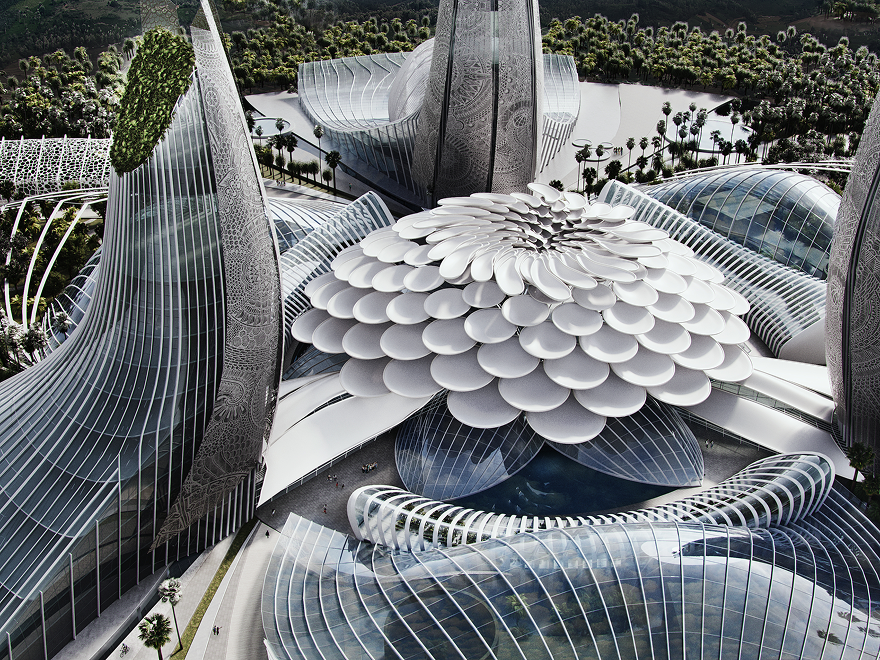
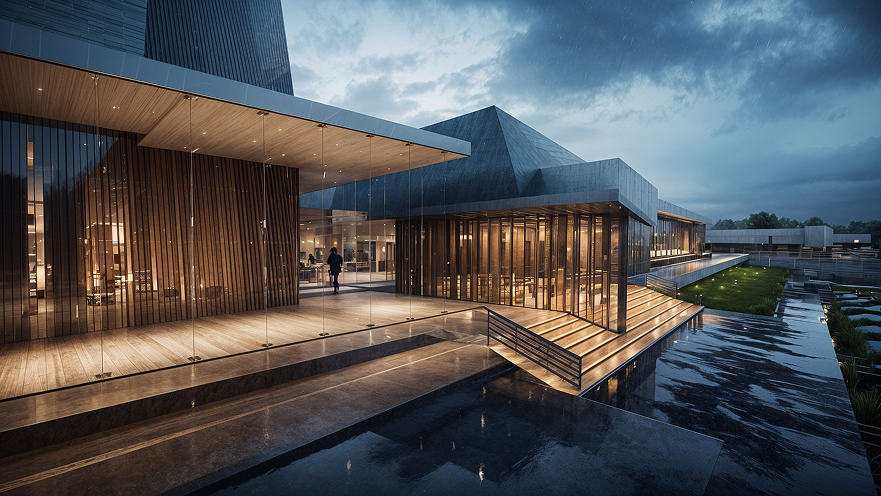
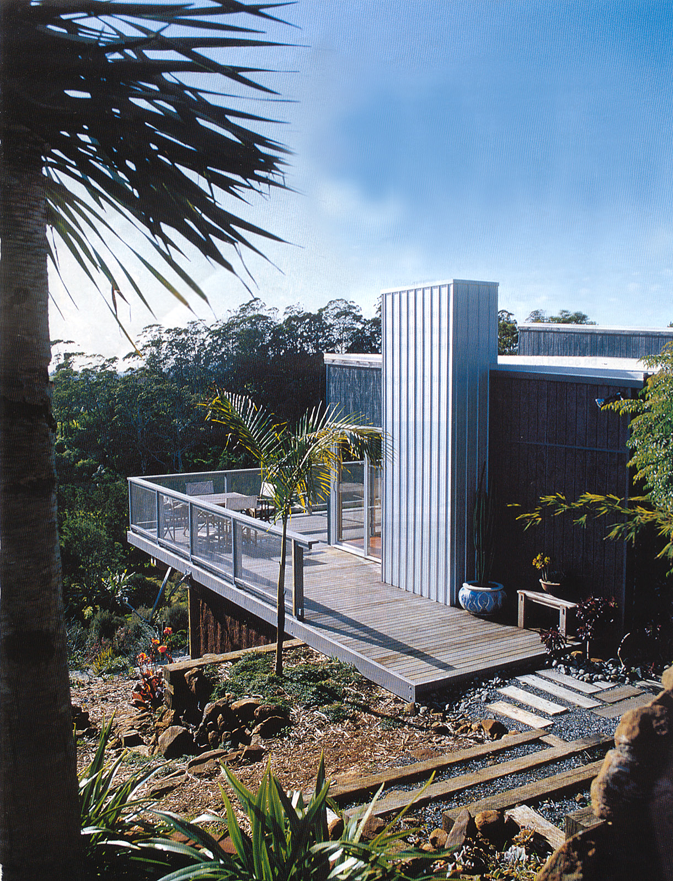

We turn visionary ideas into reality. Aquamarine Projects’ Creative Direction combines global expertise and innovative leadership to deliver tailored solutions that captivate visitors and exceed expectations.
Starting with in-depth site analysis—cultural, historical, environmental, and demographic—we create concepts that resonate deeply. Whether crafting city attractions or remote retreats, our interdisciplinary team of architects, engineers, artists, anthropologists, and biologists ensures impactful, dynamic designs.
Our turnkey research services streamline every decision, helping clients move strategically and efficiently from concept to reality.
-
Blue-sky concept development
Where imagination meets strategy.
Our Blue-Sky Concept Development service generates fresh, cutting-edge ideas tailored to client needs, opening new market opportunities. We turn initial ideas into strong, scalable projects through rigorous analysis and creative ideation.
With a world-class team, we help bring new attractions to life — from conception to construction and operations — ensuring long-term success and visitor appeal.

-
Investment prospectus & feasibility studies
Solid foundations for visionary projects.
Aquamarine Projects delivers detailed investment prospectuses and feasibility studies, covering ROI forecasts, construction budgets, cash flows, capital requirements, and market analyses.
Our reports empower clients with clear, actionable data to secure financing and move confidently forward — whether building aquariums, theme parks, or eco-resorts.
Financial projections are estimates based on current market data. Actual outcomes may vary.

-
Concept design & architectural concept
Turning ideas into tangible designs.
We transform concepts into architectural realities with creative designs that harmonize local culture, environment, and modern guest experiences.
Each concept comes with detailed costing and brochures — essential tools for investment and project promotion. Our goal: functional, sustainable spaces that captivate and inspire.

-
Master planning for tourism and attractions
Building vibrant, sustainable destinations.
Our master plans optimize visitor flow, enhance attractions, and deliver lasting community and economic benefits.
Our services include:
-
Strategic site integration
-
Attraction development and enhancement
-
Sustainability and local community engagement
-
Infrastructure planning and green technologies
-
Capacity building and training programs
-
Integrated marketing and brand strategies
From concept to completion, we provide seamless project management for unforgettable destinations.
-
-
Exhibition, interior, and graphic design
Creating immersive, story-driven environments.
We design engaging exhibitions, interiors, and graphic elements for aquariums, museums, zoos, and tourism attractions.
Services:
-
Immersive exhibition layouts
-
Visitor-centric interior design
-
Intuitive and impactful graphic design
Our holistic approach ensures every element contributes to a cohesive, memorable guest experience.
-
-
Indigenous heritage restoration and research
Celebrating and preserving indigenous cultures.
We collaborate with indigenous communities to authentically integrate heritage into tourism projects, offering:
-
Cultural research and documentation
-
Heritage site restoration
-
Community collaboration and skills development
-
Authentic storytelling and interpretation
Our projects respect and empower indigenous cultures while enhancing visitor understanding and engagement.
-
-
Marine biology and zoological consultancy
Promoting ethical care and conservation.
Our marine biology and zoological experts provide:
-
Habitat design and management
-
Sustainability-focused operations
-
Educational and interpretive program development
-
Industry compliance and conservation partnerships
We help facilities deliver world-class animal care, educational programming, and sustainable practices.
-
-
Specialist design, engineering and construction management
Building excellence from concept to reality.
We integrate specialist design, advanced engineering, and precision construction management to create sustainable, engaging visitor attractions.
Key services:
-
Life Support Systems (LSS) design
-
Thematic and architectural integration
-
Construction coordination, quality control, and compliance
-
Post-construction support and sustainability practices
-
-
Operational and management services
Ensuring long-term success for your attractions.
Aquamarine Projects offers comprehensive operational support:
-
Daily operations management
-
Staff training and development programs
-
Marketing strategy and operations consultancy
-
Facility renovations and sustainability upgrades
-
Commissioning, handover, audits, and maintenance
Our end-to-end services keep your attractions thriving, evolving, and exceeding visitor expectations year after year.
-